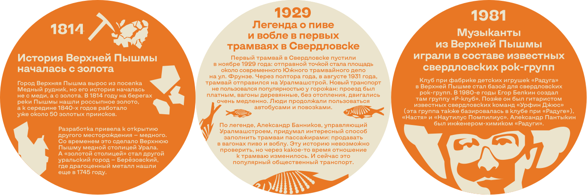
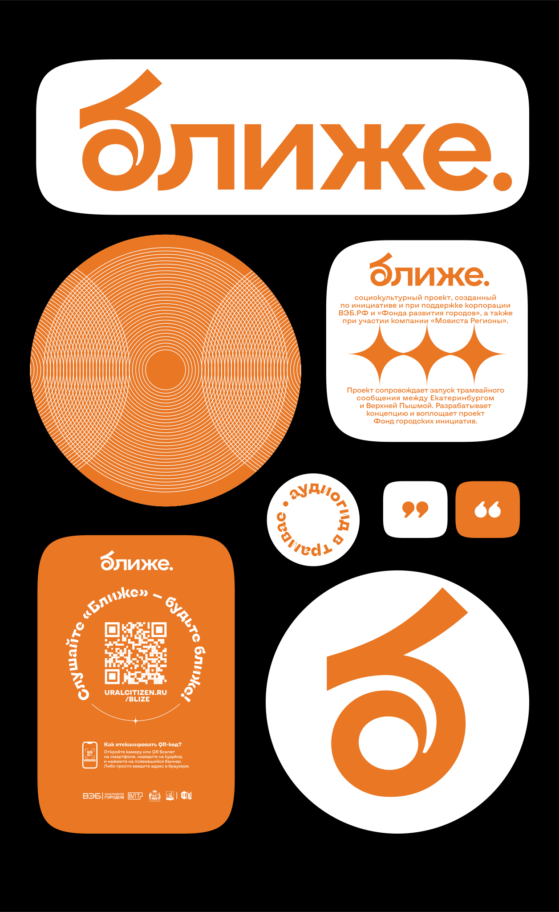
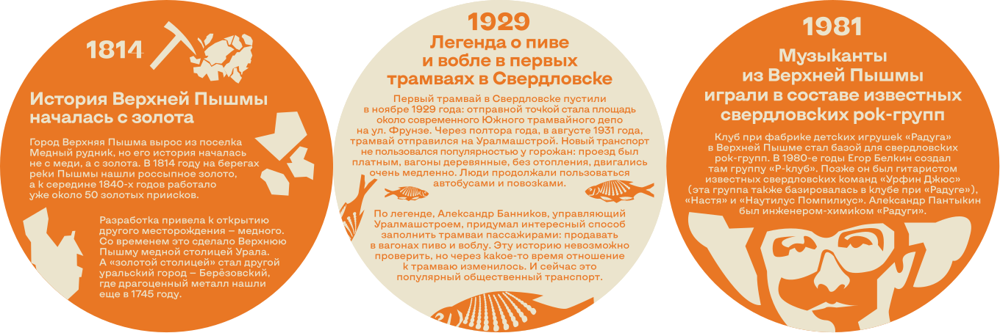
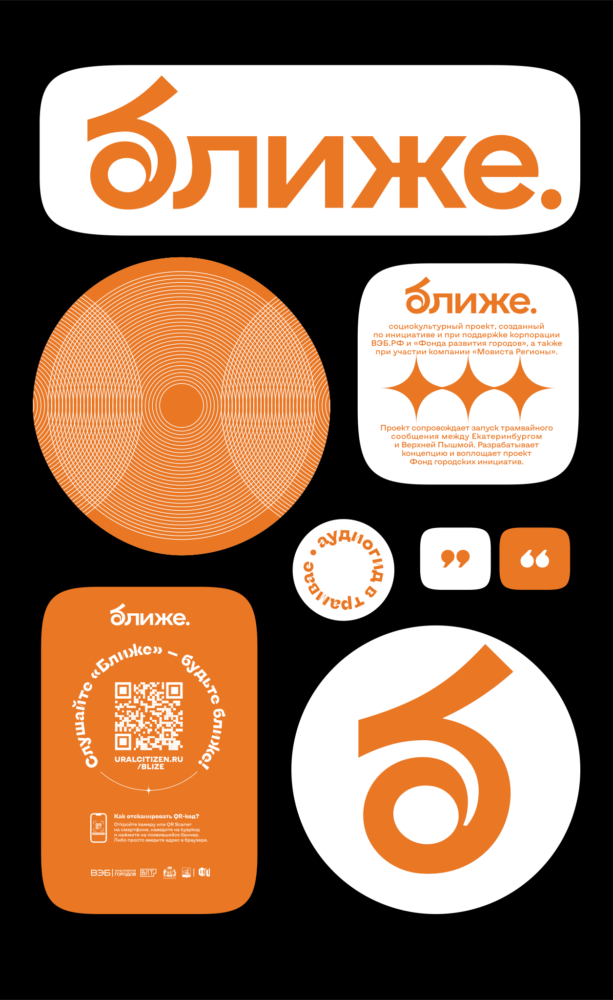
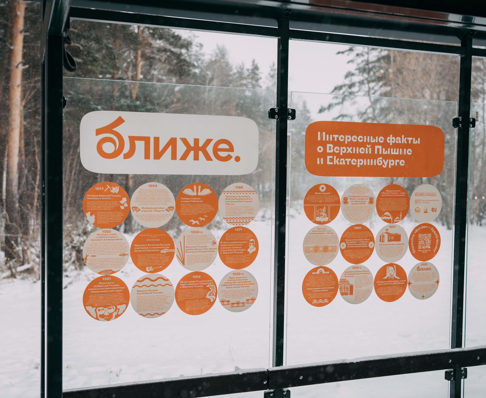
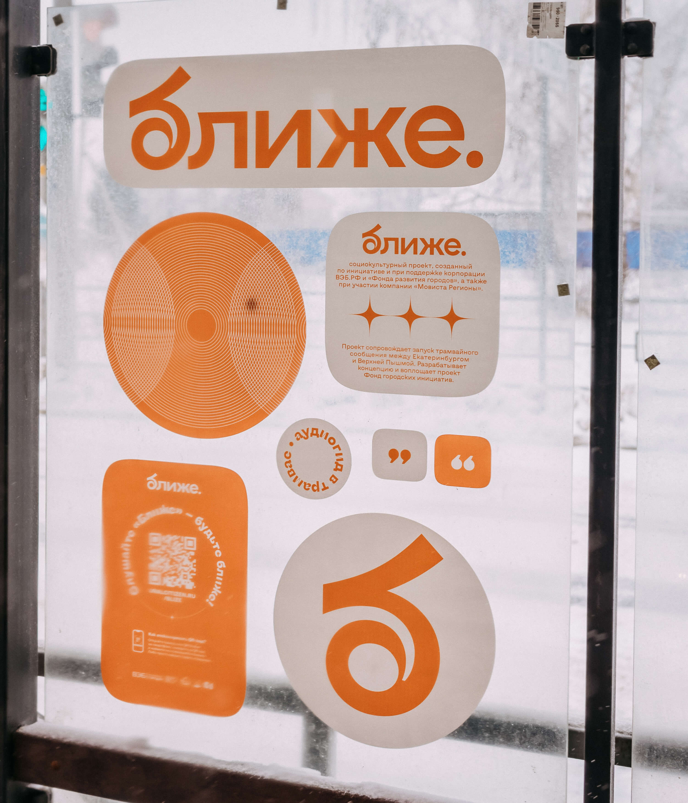
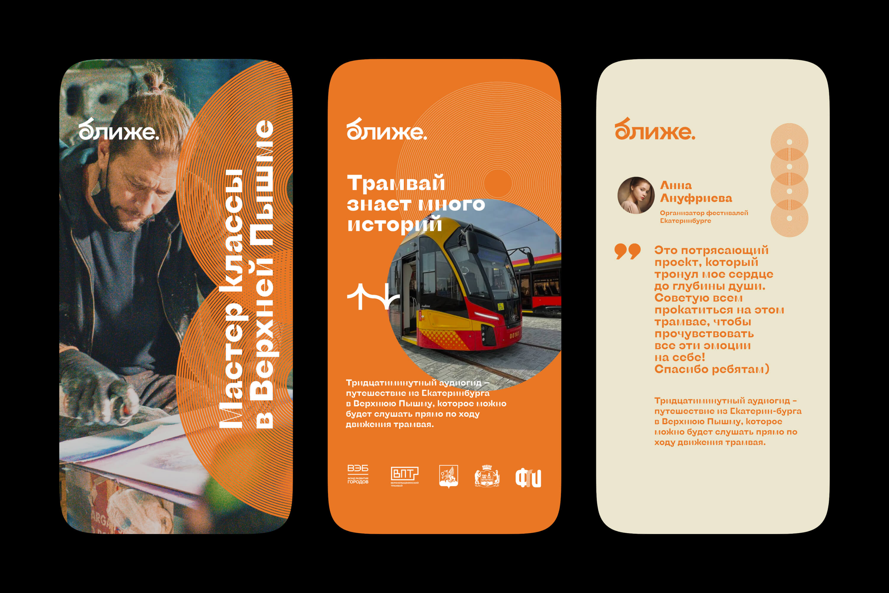
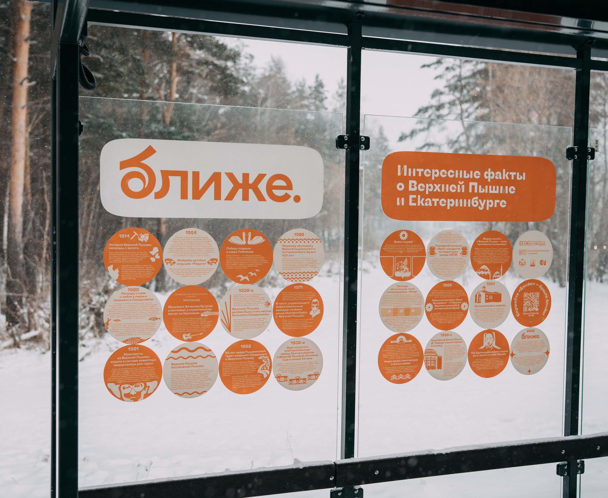
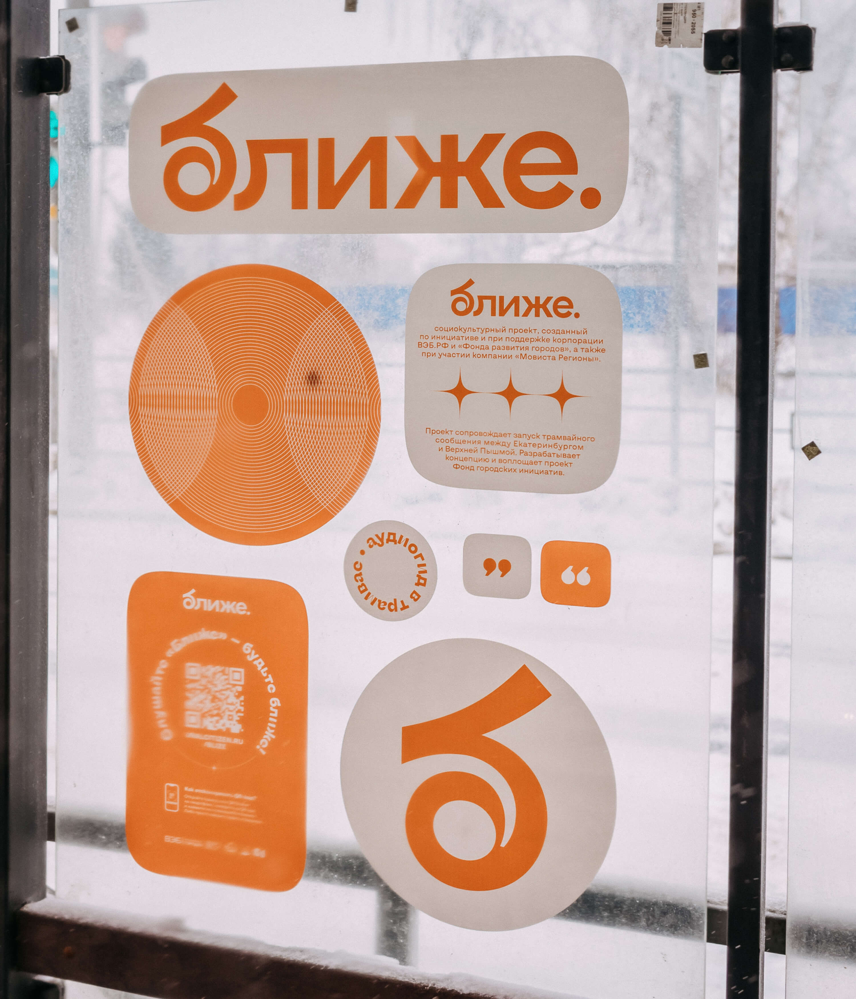
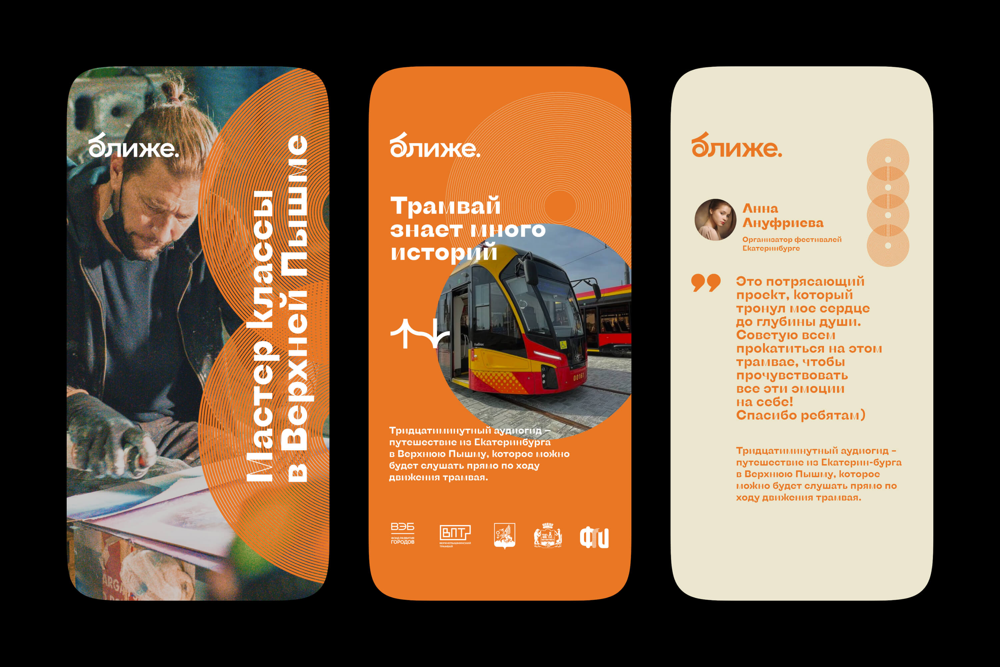

В августе 2022 года в России открыли первую междугороднюю трамвайную линию — от Екатеринбурга до Верхней Пышмы. Чтобы горожане полюбили новый транспорт, Фонд городских инициатив запустил социокультурный проект
По приглашению Фонда наша команда разработала логотип и айдентику проекта, а также оформила истории и стикеры для остановок и трамваев.
В основу айдентики легли звуковые волны аудиогида и трамвайная колёсная пара, пересечение и вайб которых символизируют сближение двух городов и жителей.
 
 
В ролях
Дизайн-код Екатеринбурга


Фонд городских инициатив


Поддержите «Дизайн-код Екатеринбурга» ✨🌟💫
Уже лет мы работаем только на личной инициативе — развиваем Екатеринбург сами и делаем это на уровне мировых столиц. Чтобы в нашем городе было ещё больше хорошего дизайна, нам нужна ваша помощь — поддержите нас разовым или ежемесячным донатом. Деньги пойдут на новые проекты и развитие существующих.
Спасибо, что следите, как мы развиваем родной город. Вы — золото 🫶
Подписывайтесь, чтобы не пропустить новые проекты